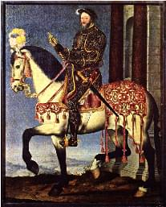

| |

Dipinto di Francois Clouet (+1572), Firenze, Uffizi |

Cognac 1494 - Rambouillet 1547
Re di Francia |
|
Figlio di Carlo di Orleans conte di Angouliéme e di Luisa di Savoia, succedette a Luigi XII di cui aveva sposato la figlia Claudia, nel momento in cui la perdita del milanese e la costante pressione degli svizzeri da un lato, la fortunata politica dinastica degli Asburgo dall'altro, minacciavano di bloccare l'espansione politica e territoriale della Francia.
La ripresa delle guerre d'Italia appariva quindi al giovane sovrano il primo dei suoi compiti: e raccolto un esercito di 30.000 uomini (un terzo di francesi e due terzi di lanzichenecchi), nell'agosto 1515 calò in Piemonte. La sua meta era Milano, ove solo l'appoggio dei cantoni elvetici sosteneva il duca Massimiliano Sforza: a Marignano (oggi Melegnano) (ndr acz: in realtà il luogo esatto dello scontro fu il borgo di Zivido frazione del comune di San Giuliano Milanese dove ancora oggi sotto la chiesa parrocchiale riposano i resti dei caduti ed è stato collocato nel 1965, a cura di una apposita fondazione elvetica, un monumento a ricordo degli svizzeri morti. Fra il borgo di Zivido e San Giuliano Milanese Francesco I� fece edificare il monastero "Della Vittoria" per ottemperare al voto espresso nella tragica notte a cavallo del 13 e 14 settembre 1515. Le fondamenta del monastero sono attualmente sovrastate dal cimitero cittadino di San Giuliano Milanese) l'esercito francese, cui giunse tempestivamente in soccorso quello veneziano, sbaragliò gli svizzeri (13-14 settembre).
Francesco I�, che si era battuto in prima linea a colpi di picca, fu un artefice decisivo della vittoria che fermò la marcia degli svizzeri nella pianura padana, costrinse lo Sforza ad abdicare (4 ottobre) e consegnò alla Francia il conteso stato di Milano.
Un indiretto ma importante frutto della vittoria fu anche il concordato che papa Leone X stipulò con Francesco I� nell'agosto 1516, cedendo sia alla minaccia militare incombente sul governo mediceo di Firenze e sulla stessa Roma, sia al timore di uno scisma del clero francese, possibile dopo i concili di Pisa e del Laterano (1510 e 1512).
Il concordato deferiva al re la designazione dei benefici concistoriali, cioè dei vescovati, delle abbazie e dei priorati, mentre i benefici minori (e in primo luogo le parrocchie) rimanevano di giuspatronato vescovile, feudale e comunale, secondo le antiche consuetudini.
L'autonomia dell'alto clero rispetto alla corona subiva un colpo decisivo, poichè il re poteva disporre delle cariche prelatizie a favore dei nobili e dei suoi cortigiani. Il basso clero, mal remunerato dalle piccole prebende e in frattura spesso aperta con i vescovi aristocratici, diveniva viceversa un focolaio di malcontento che la diffusione delle idee riformate e le guerre di religione metteranno in evidenza.
Con il concordato il gallicanesimo aveva partita vinta e Francesco I� acquisiva, con la formale sanzione pontificia, un potere nel gestire gli affari e il patrimonio ecclesiastico che nessun re di Francia aveva mai avuto. Il trattato di Noyon stipulato in seguito con la Spagna (13 agosto 1516) e una serie di accordi collaterali sembravano aprire un'era di pace tra principi cristiani, ma nel 1519 la morte di Massimiliano aprì la lotta per l'elezione imperiale, cui Francesco I� si era preparato guadagnandosi pazientemente l'appoggio di molti principi tedeschi; le grandi disponibilità finanziarie degli Asburgo e la diffidenza per l'intrusione francese nelle cose di Germania portarono però all'elezione di Carlo V, già re di Spagna.
Questo evento rendeva inevitabile, per impedire l'accerchiamento asburgico, la ripresa della guerra, che nel maggio 1521 iniziò in Italia, sul Reno, in Fiandra e nei Pirenei. FrancescoI�, che riteneva Carlo V paralizzato dalle difficoltà finanziarie e incapace di fronteggiare la rivolta dei comuneros in Spagna, subì una serie di rovesci cui reagì scendendo egli stesso in Lombardia nell'autunno 1524; il 25 febbraio 1525 l'esercito francese fu distrutto davanti a Pavia e il re, ferito a un braccio, cadde in mano agli spagnoli.
La prigionia fu subita prima a Pizzighettone poi in Spagna, sino al marzo 1526, quando la gravosa pace di Madrid liberò Francesco I�, che potè rientrare in Francia lasciando in ostaggio i due figli e cedendo Lombardia e Borgogna.
Appena giunto a Parigi, il re si dichiarò solennemente sciolto da ogni impegno contratto in cattività e riuscì subito a costituire la lega di Cognac con i principi italiani, con il papa e col larvato ma tangibile appoggio turco: ma anche questa nuova fase della guerra, che ebbe il suo momento più drammatico nel sacco di Roma (1527), volse a favore di Carlo V.
Finalmente la pace di Cambrai (o delle due dame, 1529), che confermava quella di Madrid, diede alla Francia qualche anno di respiro. Riaccesa nel 1536 e interrotta nel 1538 con la tregua di Nizza la guerra ebbe nel 1542-44 un'ulteriore ripresa cui fece seguito la pace di Crépy; ma quando Francesco I� morì (31 marzo 1547) lasciando il trono al figlio Enrico II, il conflitto era solo provvisoriamente sopito.
Per sostenere l'enorme sforzo militare, Francesco I� accompagnò a una riforma fiscale moderatamente accentratrice una politica di appoggio alla nobiltà e di caute concessioni alla borghesia degli uffici. Solo duecento nuovi nobili furono creati durante il suo regno, mentre sulle vecchie famiglie titolate si concentrarono le cariche militari e diplomatiche e i benefici ecclesiastici di nomina regia; la fedeltà dei funzionari fu nel contempo assicurata istituendo nel 1522 l'Ufficio delle partite casuali che, pur assegnando al fisco una tangente, riconosceva la venalità delle cariche, consentendo così ai titolari di negoziare i propri "offici" come beni patrimoniali. Il costo della guerra, combattuta talora anche su suolo francese, ricadde pesantemente sui ceti popolari delle città e delle campagne, provocando violente e sanguinose sommosse.
L'infiltrazione delle idee riformate, prima in Borgogna e in Guienna, poi nei centri universitari e gradualmente in tutto il paese, fu combattuta con feroce rigore da Francesco I�, specie dopo il marzo 1534 quando nei suoi appartamenti furono affissi cartelli (placards) di propaganda "luterana".
Calvino ricordò invano al re nella Institutio religionis christianae (1536) che il principe non ha potere nelle cose di coscienza e che il suddito evangelico non è in quanto tale ribelle; la repressione si fece sempre più dura.
Nonostante questa intransigenza la politica estera di Francesco I� fu spregiudicata: egli ebbe infatti costanti intese con i principi luterani della Germania; strinse con l'impero ottomano dapprima un tacito accordo (1525-26), poi (1536) un trattato commerciale estremamente vantaggioso per i sudditi francesi negli scali del levante, seguito dalla congiunzione delle due flotte che incrociavano unite nel Mediterraneo, e da ulteriori operazioni di terra e di mare nel 1541 e 1542 contro gli spagnoli. Francesco I� assunse allora apertamente la responsabilità dell'alleanza con l'infedele, facendo teorizzare dai suoi ambasciatori le giuste ragioni che tenevano la Francia in armi contro l'impero.
I trent'anni di regno di Francesco I� si chiudevano con la temporanea occupazione del Piemonte, ma con la sostanziale sconfitta delle ambizioni che avevano mobilitato così a lungo il paese. Però, nonostante le guerre si fossero concluse sempre con la vittoria delle armi e della diplomazia spagnole, quella durissima prova aveva dato alla Francia una sua compagine nazionale che le aveva permesso di durare intatta.
E il re ebbe ben vivo nella sua politica culturale il senso delle dignità e della grandezza francesi, chiamando alla sua corte Leonardo da Vinci e Benvenuto Cellini, proteggendo gli studi universitari, fondando il Collège de France. Uomo d'armi e di lettere, che tante volte aveva rischiato sul campo la propria vita, che potè essere fatto prigioniero a Pavia solo perchè ferito, che mentre mandava al rogo gli eretici negoziava con luterani e turchi, Francesco I� risolveva i suoi doveri di sovrano in termini d'onore, di splendore e di cavalleria; quel senso religioso dell'investitura monarchica, che Carlo V aveva sempre sentito, non gli era familiare.
(di Marino Berengo, Enciclopedia Europea, vol.V, 1991, Ed Garzanti) |
 |
Fran�ois 1er succ�da en 1515 � son cousin et beau-p�re Louis XII qui n'avait pas d'h�ritiers. Il avait en effet �pous� sa fille, Claude de France l'ann�e pr�c�dente, qui allait lui donner pour fils le futur roi Henri II. Son r�gne de trente-deux ans marqua profond�ment le XVIe si�cle fran�ais, transformant � l'ext�rieur les guerres d'Italie en un affrontement avec les Habsbourg, donnant, � l'int�rieur, une impulsion d�ci- sive � la pratique d'une "monarchie absolue". Fran�ois 1er avait une stature colossale, ce que laissent quelque peu entrevoir les c�l�bres portraits que l'on a de lui (Le Titien, Clouet ) ainsi que son armure gigantesque qui a �t� conserv�e jusqu'� aujourd'hui. Il mesurait presque deux m�tres, ce qui faisait de lui un v�ritable g�ant, surtout � l'�poque o� la taille moyenne �tait nettement plus faible qu'aujourd'hui. Fran�ois 1er �tait le type m�me de l'homme �l�gant de la Renaissance, vigoureux, de go�ts chevaleresques, amateur de femmes et de belles choses, un peu artiste. Mais en m�me temps, c'est un homme fantasque, sujet aux emballements, d'une intelligence un peu superficielle. Le r�gne s'ouvrit sur la fin des guerres d'Italie.
Fran�ois 1er et les guerres d'Italie
Lorsque Louis XII mourut le 1er Janvier 1515, il venait de perdre le Milanais. Son cousin Fran�ois 1er lui succ�da, il avait alors vingt ans, et il r�solut de marquer son d�but de r�gne de mani�re brillante en reconqu�rant le Milanais.
Les adversaires suisses, alli�s du Duc de Milan, furent surpris par l'habilet� de manoeuvre de l'arm�e fran�aise, et la bataille d�cisive eut lieu � Marignan (1515), pr�s de Milan, durant laquelle Fran�ois 1er remporta une victoire �clatante. Il se fit alors adouber chevalier par Bayard sur le champ de bataille de Marignan. Cette victoire lui permis par l�-m�me de signer la paix avec le pape L�on X , les Suisses, et de tenir � l'�cart de cette r�gion Charles 1er, le jeune roi d'Espagne et futur Charles Quint. Ce fut la fin des guerres d'Italie, dont l'une des cons�quences les plus importantes fut la Renaissance fran�aise, fille de la Renaissance Italienne.
La rivalit� entre Fran�ois 1er et Charles Quint
A la mort de l'empereur Maximilien d'Autriche, Charles 1er d'Espagne et Fran�ois 1er pos�rent tous les deux leur candidature � sa succession. Finalement, ce fut Charles qui fut �lu sous le nom de Charles Quint en 1519. L'ambition de conqu�rant affich�e par Charles Quint d�s le d�but de son r�gne �tait une menace s�rieuse pour le royaume de France, puisque l'empereur entendait reprendre les r�gions ayant autrefois fait partie de l'empire ( la Picardie, la Bourgogne, le Dauphin�, la Provence). Mais Fran�ois 1er continuait � s'occuper de l'Italie, au lieu de se soucier des fronti�res du Nord et de l'Est. Ainsi, la premi�re guerre fut d�sastreuse pour Fran�ois 1er. A la suite de combats malheureux en Italie ou Bayard p�rit, Fran�ois 1er s'impliqua personnellement avec une esp�ce de fougue un peu folle et il fut pri- sonnier � Pavie en 1525. Pour retrouver la libert�, il consentit � signer le d�sastreux trait� de Madrid (1526) par lequel il renon�ait � l'Italie et promettait de c�der la Bourgogne. Cependant, il viola ce trait� d�s qu'il eut retrouv� la libert�, avec le soutien des Etats de Bourgogne. La guerre fut marqu�e par une pause lors de la" paix des dames ", puis s'acheva sur la constatation d'un �quilibre des forces (trait� de Cambrai,1529). Ayant pris la mesure de son adversaire, dans la troisi�me phase du conflit, Fran�ois 1er chercha des alli�s : le Turc Soliman le Magnifique, Henri VIII, les princes protestants allemands. L'alliance Turque parut scandaleuse, mais fut profitable militairement et commercialement. La longue lutte qui suit, confu- se et sans gloire, aboutit au trait� de Cr�py (1544), cr�ant le premier et fragile �quilibre europ�en.
L'exercice de la monarchie sous Fran�ois 1er
Monarque � la fois fin, �clair�, mais aussi brutal et intransigeant, en un mot ambigu, Fran�ois 1er exer�a le pouvoir avec fermet� et ramena la royaut� dans la voie du despotisme. C'est � lui que l'on doit la formule " Car tel est notre bon plaisir ", qui �tait appos�e au bas des ordonnances. C'est �galement sous son r�gne qu'apparut l'expression "Votre Majest�", jusqu'alors r�serv�e a l'empereur. Personne ne songeait s�rieusement � s'opposer au roi, si ce n'est le Duc de Bourbon (appel� aussi " le conn�table "). L'alliance que celui-ci tenta avec Charles Quint �choua, et il se vit confisqu� � peu pr�s tous ses biens. Les autres seigneurs n'avaient aucun int�r�t � d�sob�ir, et le clerg� non plus. Le roi exer�ait une autorit� totale sur les pr�lats de l'�glise, puisque par le Concordat de Bologne (1516), le pape L�on X avait reconnu � Fran�ois 1er le droit de nommer les archev�ques, �v�ques et abb�s du royaume. Dans le souci de voir son autorit� incontest�e, Fran�ois 1er ne r�unit jamais les Etats G�n�raux. Il �coutait m�me � peine les quelques remarques que le Parlement osait timidement opposer � son autorit� de temps � autre. Pour traiter des affaires capitales, le roi prenait conseil aupr�s de quelques intimes, le Conseil des Affaires. C'est sous le r�gne de Fran�ois 1er que se d�veloppe la Cour, dont l'apog�e sera atteinte sous le r�gne de Louis XIV. La Cour �tait alors constitu�e de plusieurs milliers de personnes, elle exer�ait une fascination certaine pour tous ceux qui enviaient l'aura de pouvoir, de plaisirs et de f�tes m�l�s qui lui �tait attach�e. La Cour �tait compos�e de fonctionnaires et domestiques au service du roi, de ceux qui l'aidaient � gouverner, des Princes de sang, et enfin tous ceux que le roi dai- gnait y appeler, selon son bon plaisir. Cependant, toutes les f�tes de la cour, les guerres incessantes, la construction des ch�teaux entra�naient des d�penses �nor- mes, et c'est � Fran�ois 1er que l'on doit le premier emprunt en 1522, et c'est �ga- lement � cette date que remonte notre Dette Publique. Le d�sordre des finances ne fut pas r�sorb� pour autant, et ce mal chronique embarrassa la royaut� jusqu'en 1789.
Un artisan de la Renaissance en France
Au bout du compte, l'empreinte la plus marquante du monarque se situe sur le plan intellectuel et artistique. D�s son av�nement, Fran�ois 1er veut �tre reconnu comme le prince de la Renaissance. L'art nouveau sert son go�t du prestige, de la magnificence, et sa volont� politique d'affirmer la grandeur du pouvoir royal. La cour de Fran�ois 1er est brillante et admir�e en Europe. Le roi prot�ge humanistes, musi- ciens et po�tes (Ronsard, Du Bellay, Marot, Bud�, Lef�vre d'�taples) et fonde le Coll�ge des lecteurs royaux, qui deviendra plus tard le Coll�ge de France. Suivant l'exemple de Charles VIII, il ach�te en Italie tableaux et statues antiques. C'est lui qui fait venir en France L�onard de Vinci qu'il installe au Clot-Luc�, et fait appel � d'autres grands artistes italiens tels que Benvenuto Cellini. Sur le plan architectural, le r�gne de Fran�ois 1er est marqu� surtout par la construction ou la r�novation de somptueux ch�teaux dans lesquels le souffle de la Renaissance s'exprime pleine- ment. Fran�ois 1er fait agrandir le ch�teau de Blois. Il abandonne, d�lib�r�ment, le style ancien de construction adopt� par ses pr�d�cesseurs. Le b�timent est construit en pierre de taille et non plus en brique. La fa�ade � galeries et arcades est inspir�e de l'architecture �difi�e par Bramante au Vatican. De 1520 � 1540, une nouvelle r�sidence royale est �lev�e � Chambord. La sym�trie, l'harmonie de l'ensemble, le parc et les jardins en font l'un des monuments les plus remarquables de cette �poque. Depuis les vastes terrasses � l'italienne, la cour suivait les d�parts pour la chasse dans les for�ts de la Sologne, toute proche. Par la suite, apr�s le d�sastre de Pavie (1554), Fran�ois 1er fait construire surtout en Ile-de-France. Le ch�teau de Fontainebleau, agrandi, re�oit un d�cor magnifique. Deux artistes italiens, Le Rosso et Le Primatice y animent des ateliers nombreux et brillants. Fascin� par l'Italie, exactement comme d'autres, en d'autres temps, seront fascin�s par l'Am�rique, Fran�ois 1er y a donc puis� l'�me de la Renaissance, qui a pu se d�velopper ensuite avec son caract�re propre en France. Enfin, c'est sous le r�gne de Fran�ois 1er que la langue du royaume, le fran�ais, s'est v�ritablement unifi�e. (Texte �crit par P.M) |